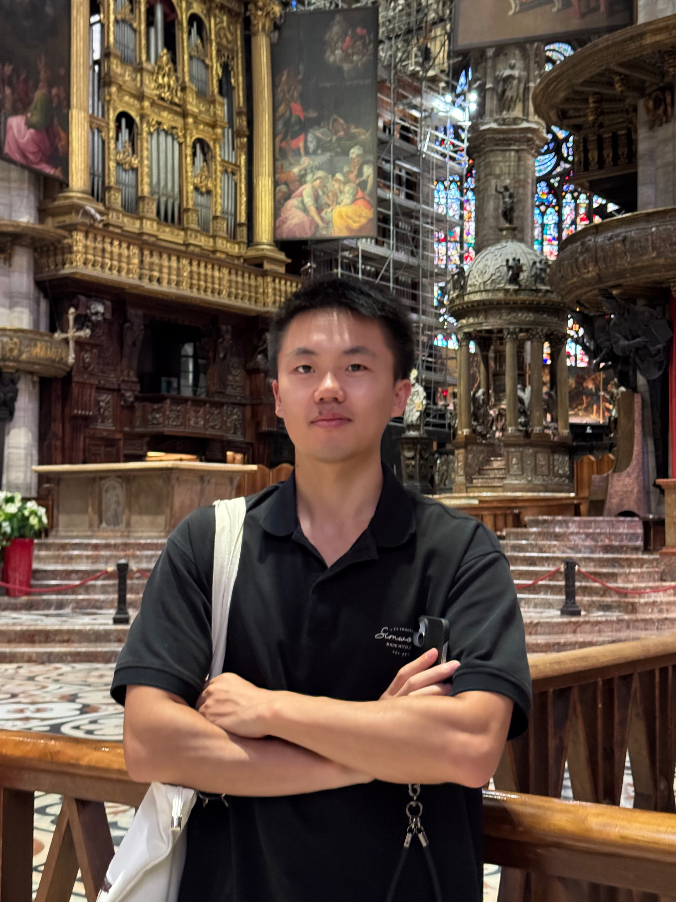
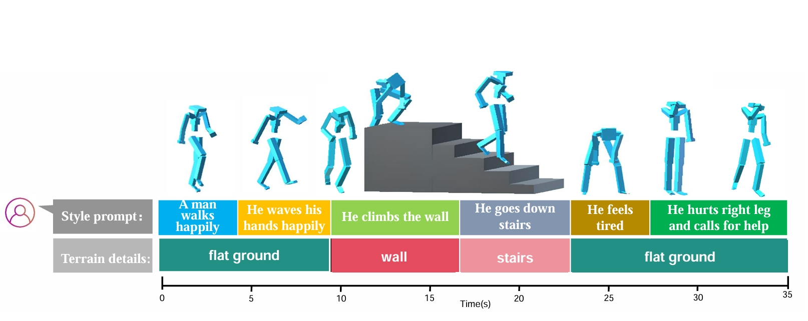
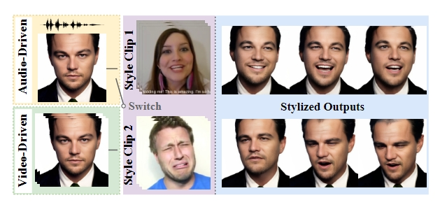

Shuai Tan(谭帅)
|  |
Ph.D Candidate |
About me
I am currently pursuing the Ph.D degree in Computer Science and Engineering at Shanghai Jiao Tong University (SJTU).
I received my bachelor degree in College of Software Engineering at Sichuan University (SCU) in 2022.
My research interests include deep learning and its applications on audio-visual learning, image/video
generation, and virtual human creations.
I plan to graduate with a PhD from Shanghai Jiao Tong University in June 2026 and then pursue postdoctoral research ; if you are interested in my work and have a suitable position—particularly in the areas of digital human animation, AIGC, video generation/editing—please feel free to contact me (tanshuai0219@outlook.com).
News
-
[2025-02] One collaborative paper accepted to VR 2025 with Best Papers - Honorable Mentions.
-
[2025-02] One collaborative paper accepted to TVCG 2025.
-
[2024-07] One paper accepted to ECCV 2024 (Oral).
-
[2024-02] One paper accepted to CVPR 2024.
-
[2024-02] One collaborative paper accepted to TVCG 2024.
-
[2023-12] Two papers accepted to AAAI 2024.
-
[2023-07] One paper accepted to ICCV 2023.
-
[2023-05] One collaborative paper accepted to KBS 2023.
-
[2023-05] One collaborative paper accepted to IJNS 2023.
-
[2023-02] One collaborative paper accepted to TVCG 2023.
-
[2021-06] One paper accepted to MICCAI 2021.
Publications
- Journal Reviewer of TMM, TCSVT.
- 2024.12 John Centre PhD First Class Scholarship
- 2024.10 National Scholarships for PhD students
- 2023.12 John Centre PhD Second Class Scholarship
- 2022.06 Outstanding Thesis of Sichuan University
- 2022.05 Outstanding Graduates of Sichuan Province and Sichuan University
- 2021.10 National Inspiration Scholarship
- 2020.10 National Inspiration Scholarship
- 2019.10 Tongxin Scholarship
Ye Pan, Chang Liu, Sicheng Xu, Shuai Tan, Jiaolong Yang IEEE Conference on Virtual Reality and 3D User Interfaces (VR) 2025, Best Papers - Honorable Mentions. |
|  | Bin Ji, Ye Pan, Zhimeng Liu, Shuai Tan, Xiaokang Yang IEEE Transactions on Visualization and Computer Graphics (TVCG) 2025. |

|
Shuai Tan, Bin Ji, Mengxiao Bi, Ye Pan European Conference on Computer Vision (ECCV) 2024 (Oral). PDF Project Code 

|

|
Shuai Tan, Bin Ji, Ye Pan IEEE / CVF Computer Vision and Pattern Recognition Conference (CVPR) 2024. |

|
Ye Pan, Shuai Tan, Shengran Cheng, Qunfen Lin, Zijiao Zeng, Kenny Mitchell IEEE Transactions on Visualization and Computer Graphics (TVCG) 2024. |
|  | Shuai Tan, Bin Ji, Yu Ding, Ye Pan AAAI Conference on Artificial Intelligence (AAAI) 2024. PDF Code |

|
Shuai Tan, Bin Ji, Ye Pan AAAI Conference on Artificial Intelligence (AAAI) 2024. PDF Code |

|
Shuai Tan, Bin Ji, Ye Pan International Conference on Computer Vision (ICCV) 2023. |
Yuang Shi, Chen Zu, Pinli Yang, Shuai Tan, Hongping Ren, Xi Wu, Jiliu Zhou, Yan Wang Knowledge-Based Systems (KBS) 2023. |

|
Lu Wen, Jianghong Xiao, Shuai Tan, Xi Wu, Jiliu Zhou, Xingchen Peng, Yan Wang International Journal of Neural Systems (IJNS) 2023. |
Ye Pan, Ruisi Zhang, Shengran Cheng, Shuai Tan, Yu Ding, Kenny Mitchell, Xubo Yang IEEE Transactions on Visualization and Computer Graphics (TVCG) 2023. |

|
Shuai Tan, Pin Tang, Xingchen Peng, Jianghong Xiao, Chen Zu, Xi Wu, Jiliu Zhou, Yan Wang Medical Image Computing and Computer Assisted Intervention (MICCAI) 2021. PDF Code |
Professional Activities
Honors and Awards
Total clicks: